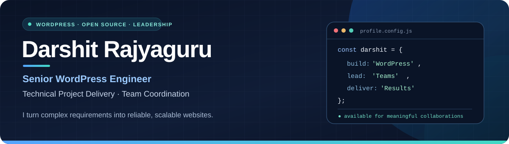

Portfolio Email me LinkedIn WordPress.org
WordPress Core & Core AI Contributor · Theme & Plugin Developer · WooCommerce Specialist
Based in India · Collaborating with clients and teams remotely
👋 About me
I'm Darshit Rajyaguru, a Senior WordPress Developer with 5+ years of hands-on experience delivering custom WordPress websites, WooCommerce solutions, reusable themes, plugins, and performance-focused web experiences.
My work goes beyond development. I help translate client requirements into clear scope, realistic project estimates, actionable tasks, coordinated teamwork, and dependable delivery. I enjoy being hands-on with architecture and code while keeping communication, quality, and timelines in focus.
| Engineering | Project delivery | Collaboration |
|---|---|---|
| Custom themes & plugins, WooCommerce, API integrations, Figma-to-WordPress | Discovery, scope definition, effort estimation, sprint planning, task tracking, QA & release coordination | Client calls & updates, team mentoring, work allocation, reviews, stakeholder alignment |
How I work: Understand the business goal → estimate & plan → build thoughtfully → test thoroughly → communicate clearly → ship confidently.
✨ At a glance
| Experience | WordPress contributions | Published extensions | Working style |
|---|---|---|---|
| 5+ years | 9 core releases | 3 themes + 1 plugin | Hands-on engineering + team coordination |
WordPress contributions and published products are linked below for independent verification.
🧭 Engineering, leadership & delivery
| Focus area | What I bring |
|---|---|
| Project planning & estimation | Requirement discovery, technical feasibility, effort breakdown, priorities, milestone planning, delivery estimates, and scope-change discussions. |
| Team handling & coordination | Task allocation, developer collaboration, progress monitoring, mentoring, code reviews, blockers, and cross-functional handoffs. |
| Client communication | Clear status reports, technical explanations in business language, expectation setting, feedback loops, and demo/review calls. |
| WordPress architecture | Maintainable custom themes/plugins, hooks, templates, CPTs, taxonomies, ACF/SCF, dynamic content, REST APIs, and coding standards. |
| Commerce & integrations | WooCommerce customizations, checkout improvements, payment integrations, form flows, AJAX, and third-party API connections. |
| Quality & optimization | Mobile responsiveness, accessibility fundamentals, performance, Core Web Vitals, technical SEO, security-conscious development, QA, and maintenance. |
🏗️ Published WordPress work
These projects are available in the official WordPress.org directory — not just mockups or private screenshots.
| Project | What it demonstrates | Explore |
|---|---|---|
| RDS Novera · Theme | Adaptable, accessibility-minded multipurpose WordPress theme with modern layouts and design flexibility. | WordPress.org → |
| RDS Portfolio · Theme | Portfolio and personal-brand theme for developers, designers, freelancers, and agencies. | WordPress.org → |
| BlueBoxed · Theme | Lightweight responsive blog theme focused on readability and clean presentation. | WordPress.org → |
| TypeForge CPT and Meta Builder · Plugin | Developer-friendly setup for custom post types, taxonomies, and post meta without repetitive boilerplate. | WordPress.org → |
Beyond published products: I also work on custom client websites, WooCommerce builds, design-to-code implementations, and developer-focused automation tools. See my portfolio for additional work.
🌱 WordPress open-source involvement
I'm active in the WordPress community across Core, Core AI, testing, themes, documentation, and translations.
- WordPress Core Contributor: credited on releases spanning 6.3–7.1 (9 releases shown on my WordPress.org profile).
- Core AI Contributor: involved in WordPress AI-related development and collaboration.
- Theme & Plugin Developer: creator of the published products linked above.
- Community & localization: contributions to Gujarati/Hindi translation, testing, documentation, and the wider WordPress ecosystem.
🔎 Explore my official WordPress.org contributor profile
🛠️ Tech stack & workflow
WordPress & commerce
WordPress WooCommerce Elementor Gutenberg ACF REST API
Languages & frontend
PHP JavaScript HTML5 CSS3 Sass Tailwind_CSS Bootstrap jQuery MySQL
Design, development & delivery tools
Figma Git GitHub VS Code Postman Jira Trello Slack
Additional tools, platforms & practices
- Builders & design: Divi, WPBakery, Gutenberg blocks, Figma / Adobe XD to WordPress.
- Hosting & deployment: cPanel, Hostinger, Kinsta, LocalWP, staging-to-production workflows, backups, migrations.
- Optimization: caching/CDN, WP Rocket, LiteSpeed Cache, Cloudflare, SEO and accessibility checks.
- Development workflows: Git branching, REST/AJAX, MySQL, debugging, testing, Postman, CI-minded releases.
- Delivery management: Jira, Trello, Basecamp, sprint tracking, documentation, QA checklists, handoffs.
- AI-assisted workflow: OpenAI/Codex, Cursor and other developer assistants where useful; human-reviewed output.
🤝 Ways I can help
Development: Custom WordPress websites · Figma-to-WordPress · WooCommerce development & checkout improvements · Theme/plugin development · Performance fixes · Migrations & ongoing support.
Delivery: Technical scoping · Project estimation · Task breakdown · Team coordination · Sprint planning · Client communication · Code/QA reviews · Launch planning.
📈 GitHub activity
Show GitHub stats
GitHub stats load online GitHub stats load online
External GitHub stat cards may occasionally be unavailable; they are not a measure of private or WordPress.org contribution work.Have a WordPress project or need a technical delivery partner?
Let's discuss the scope, priorities, estimated effort, and a practical path to launch.
Build with care. Lead with clarity. Deliver with confidence. · India 🇮🇳